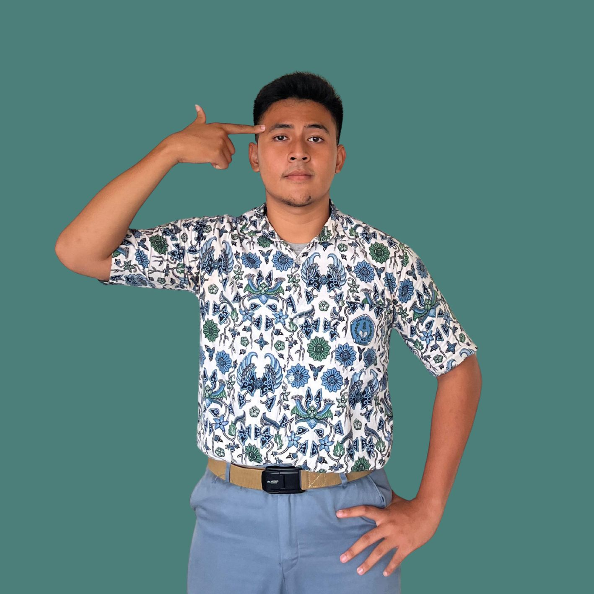
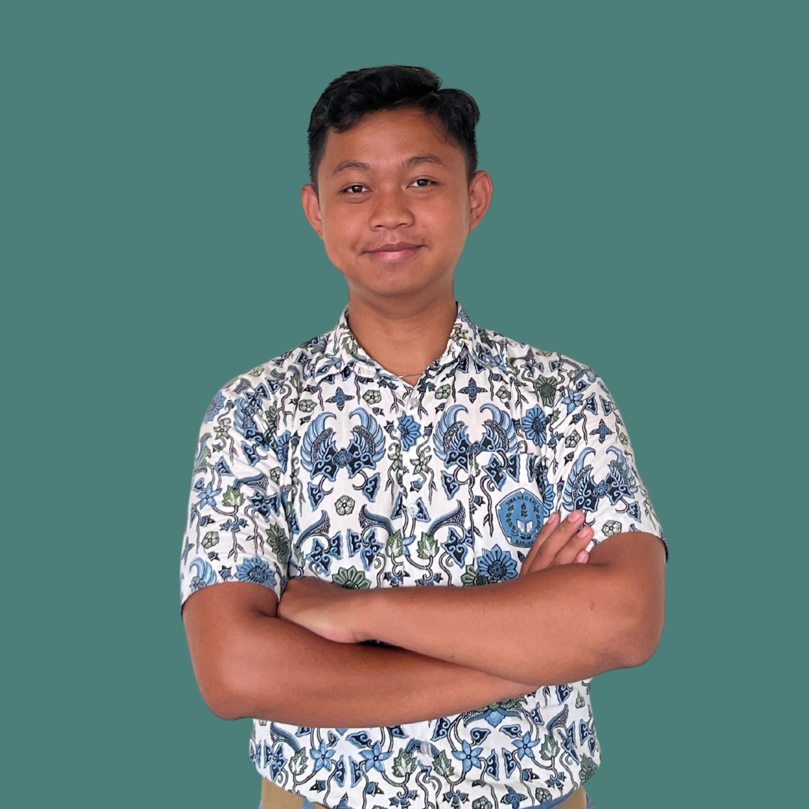
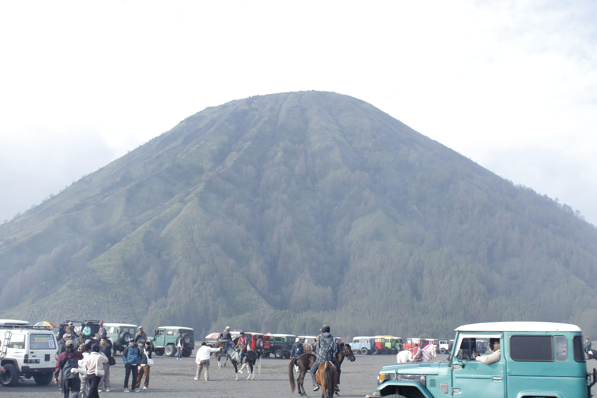
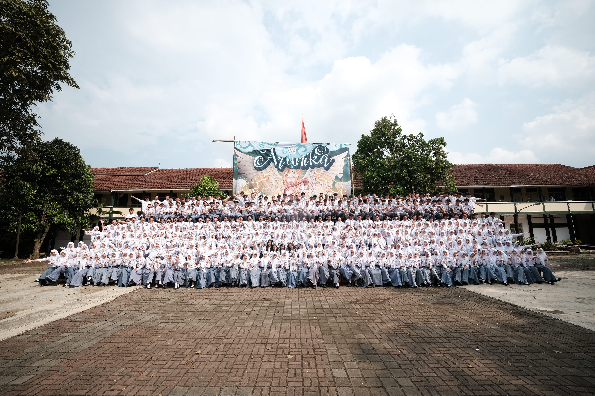

Penanggung Jawab

Fawwaz Naufal Z
Angkatan 2026
Penanggung Jawab Umum
Galuh Giyanif
Angkatan 2026
Penanggung Jawab 1
Iksal Meilana
Angkatan 2026
Penanggung Jawab 2

M. Riky Kurniawan
Angkatan 2026
Ketua Pelaksana
Arunika secara etimologis merepresentasikan kehadiran cahaya surya yang menyapa dunia tepat pada momentum fajar menyingsing, yang secara substansi mengandung makna filosofis sebagai fajar harapan dan simbol dari titik nadir menuju kebangkitan yang sarat akan energi positif serta optimisme kolektif bagi setiap individu di dalam angkatan. Makna mendalam dari filosofi ini mengajak setiap anggota untuk berani melakukan transformasi jati diri dari keterbatasan menuju kebebasan untuk terbang tinggi layaknya kupu-kupu tanpa kehilangan arah, di mana keberhasilan yang ingin diraih bukanlah sebuah ambisi buta melainkan pencapaian yang tetap mengedepankan harmoni dan keindahan hidup sebagaimana keanggunan seorang dewi yang melantunkan simfoni melalui dawai harpa.
Masa pendidikan ini dipandang sebagai sebuah pralambang atau awal dari simfoni kehidupan yang kompleks namun indah, di mana setiap individu berperan sebagai nada yang menyusun keselarasan luar biasa bagi masa depan melalui integrasi nilai pertumbuhan yang melambangkan pembaharuan diri secara kontinu, kecerdasan yang mencerminkan kedalaman intelektual serta stabilitas dalam bertindak, dan energi positif yang memancarkan kegembiraan dalam menjalani setiap proses kehidupan. Makna tertinggi dari Arunika adalah sebuah komitmen kemaslahatan untuk tumbuh menjadi pribadi yang tidak hanya bersinar bagi diri sendiri, tetapi juga memiliki kapasitas untuk menjadi sumber cahaya bagi lingkungan sekitar, menyinari kegelapan di sekeliling, dan melangkah dengan keyakinan penuh demi meraih masa depan yang gemilang secara bersama-sama.
Sebagaimana fajar yang menyentuh setiap sudut bumi secara bersamaan, mari kita jadikan angkatan ini sebagai ruang untuk saling memantulkan inspirasi. Kita mungkin melangkah ke arah yang berbeda, namun biarlah setiap pencapaian kita menjadi gema yang saling menguatkan. Tumbuhlah dengan megah tanpa menjatuhkan, dan bersinarlah dengan terang tanpa harus memadamkan cahaya di sekitar kita.
Arunika menandai mulainya sebuah perjalanan panjang. Di balik pertemuan ini, ada kesepakatan tak tertulis untuk terus saling menguatkan. Mari bersinar di bidang masing-masing tanpa memadamkan cahaya sesama, karena mulai hari ini, keberhasilanmu adalah kebanggaan bagi cerita yang kita miliki bersama.

Angkatan 2026
Penanggung Jawab Umum
Angkatan 2026
Penanggung Jawab 1
Angkatan 2026
Penanggung Jawab 2

Angkatan 2026
Ketua Pelaksana
Arunika Awards merupakan sebuah ruang apresiasi yang didedikasikan khusus untuk merayakan keberagaman karakter dalam perjalanan panjang angkatan kita. Nama "Arunika"—yang berarti cahaya matahari saat terbit—dipilih sebagai simbol semangat yang pernah kita bangun bersama sejak awal pertemuan hingga saat ini. Ajang ini bukan sekadar pemberian penghargaan, melainkan sebuah bentuk penghormatan terhadap setiap pribadi yang telah memberikan warna tersendiri bagi dinamika angkatan kita. Kami percaya bahwa setiap individu memiliki peran penting dalam membentuk cerita besar yang kita miliki saat ini.

Study Tour13 Januari 2025
Study tour SMAN 1 Banjar ke Malang menjadi perjalanan edukatif yang penuh kesan, memadukan eksplorasi wawasan dengan keseruan wisata alam Jawa Timur.

Year Book22 Mei 2026
Buku tahunan angkatan Arunika merangkum jejak perjalanan dan memori indah masa sekolah dalam sebuah karya visual yang penuh makna.
19 Mei 2026
Perpisahan angkatan Arunika menjadi momen haru yang menandai akhir sebuah babak sekaligus awal langkah baru menuju impian masing-masing.
Alumni Aktif
Perusahaan Partner
Event & Kegiatan
Negara
"Arunika Awal dari sebuah cahaya. Mari kita jadikan angkatan ini tempat untuk tumbuh tanpa menjatuhkan, dan bersinar tanpa memadamkan. Mulai hari ini, kita adalah satu cerita di bawah langit yang sama"
- M. Riky Kurniawan
"Jadilah besar tanpa mengecilkan, jadilah tinggi tanpa merendahkan. Karena pada akhirnya, keberhasilan sejati adalah saat kita bisa menoleh ke belakang dan melihat teman-teman kita ikut bersinar bersama."
- Syafa Aulia
"Berpencarlah untuk berakar, bertumbuhlah untuk merangkul. Kita adalah satu rimbun yang akarnya tetap saling menguatkan meski dahan kita tak lagi bersentuhan."
- Fawwaz Naufal Zahran
Jl. KH. Mustofa No. 1
Banjar Jawa Barat, 46311
+62 859-5154-9839
arunikasmansaban@gmail.com